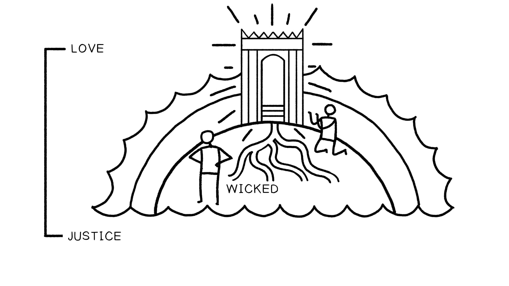
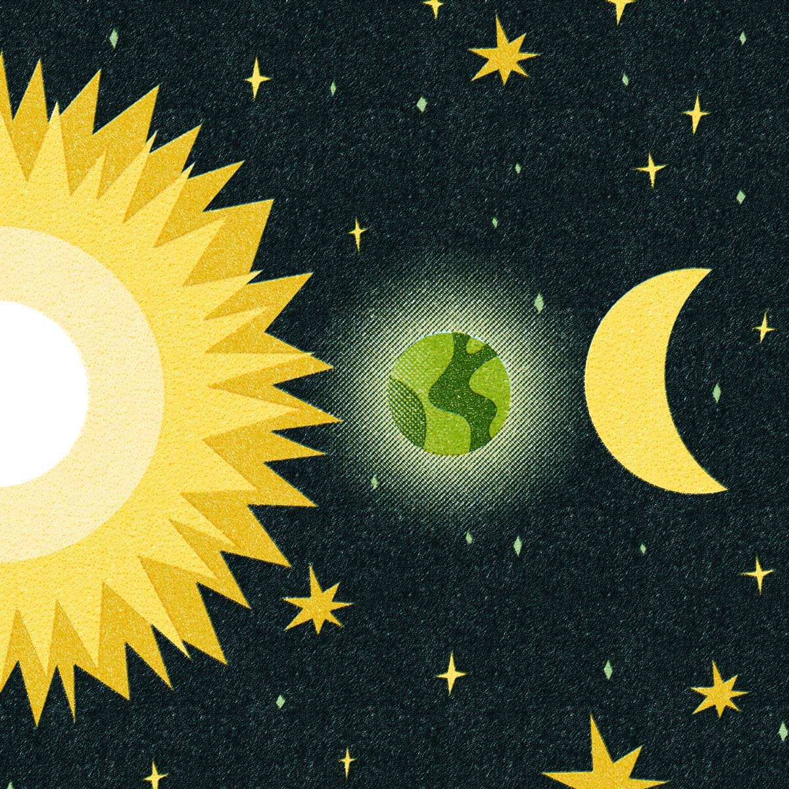

1 A transgressão fala ao ímpio no fundo do seu coração; não há temor de Deus diante dos seus olhos. 2 Pois ele se lisonjeia aos seus próprios olhos, pensando que a sua iniquidade não será descoberta nem odiada. 3 As palavras da sua boca são maldade e engano; ele deixou de agir com sabedoria e de fazer o bem. 4 Ele maquina maldade em sua cama; coloca-se num caminho que não é bom; não rejeita o mal. 5 A tua misericórdia, ó SENHOR, se estende até os céus, a tua fidelidade até as nuvens. 6 A tua justiça é como os montes de Deus; os teus juízos são como o grande abismo; a homens e animais tu salvas, ó SENHOR. 7 Como é preciosa a tua misericórdia, ó Deus! Os filhos dos homens se refugiam à sombra das tuas asas. 8 Eles se fartam da abundância da tua casa, e tu os fazes beber do rio das tuas delícias. 9 Pois contigo está a fonte da vida; na tua luz vemos a luz. 10 Continue a tua misericórdia para com os que te conhecem, e a tua justiça para com os retos de coração! 11 Não deixe o pé do arrogante vir sobre mim,1 Transgression speaks to the wicked deep in his heart; there is no fear of God before his eyes. 2 For he flatters himself in his own eyes that his iniquity cannot be found out and hated. 3 The words of his mouth are trouble and deceit; he has ceased to act wisely and do good. 4 He plots trouble while on his bed; he sets himself in a way that is not good; he does not reject evil. 5 Your steadfast love, O LORD, extends to the heavens, your faithfulness to the clouds. 6 Your righteousness is like the mountains of God; your judgments are like the great deep; man and beast you save, O LORD. 7 How precious is your steadfast love, O God! The children of mankind take refuge in the shadow of your wings. 8 They feast on the abundance of your house, and you give them drink from the river of your delights. 9 For with you is the fountain of life; in your light do we see light. 10 Oh, continue your steadfast love to those who know you, and your righteousness to the upright of heart! 11 Let not the foot of arrogance come upon me,
nem a mão dos ímpios me afaste. 12 Ali caem os praticantes do mal; são derrubados, incapazes de se levantar. Reflexão sobre o Salmo 36 O que você nota sobre a cosmologia antiga e a forma do cosmos no Salmo 36? A Terra dos Ímpios. Ilustração criada por Tim Mackie para BibleProject Classroom: Heaven and Earth (2019).nor the hand of the wicked drive me away. 12 There the evildoers lie fallen; they are thrust down, unable to rise. Reflection on Psalm 36 What do you notice about ancient cosmology and the shape of the cosmos in Psalm 36? The Land of the Wicked. Illustration created by Tim Mackie for BibleProject Classroom: Heaven and Earth (2019).


O que algo que se destaca para você no Salmo 36 se relaciona com essa cosmologia antiga que temos discutido? Os elementos do cosmos bíblico (a terra seca, os céus, o abismo) correspondem a diferentes características. O que eles simbolizam?What’s something that stands out to you from Psalm 36 that relates to this ancient cosmology we’ve been discussing? The elements of the biblical cosmos (the dry land, the heavens, the deep) correspond to different characteristics. What do they symbolize?
e da Terra SESSÕES 23-26 Veja como as duas realidades do Céu e da Terra se fundem ao longo da história bíblica e explore tópicos fascinantes como os seres celestiais.and Earth SESSIONS 23-26 See how the two realities of Heaven and Earth merge throughout the biblical story and explore fascinating topics like heavenly beings.